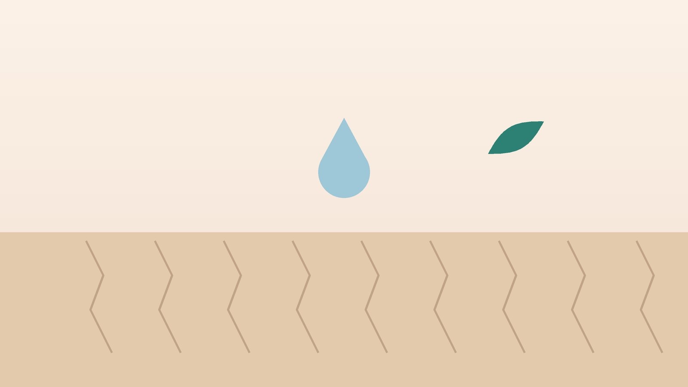

건강 칼럼 · 인천 피부건조증 한의원
몸이 건조하고 밤마다 가렵다면, 피부건조증·노인성 가려움 한방 관리

나의 피부, 이런 모습인가요?
- 정강이, 팔, 등 피부가 하얗게 일어나고 거북이 등처럼 갈라진다
- 씻고 나면 피부가 당기고 더 가렵다
- 겨울이나 난방을 시작하면 가려움이 심해진다
- 밤에 이불 속에서 가려워 잠을 깬다
- 긁은 자리에 피딱지나 줄 모양 상처가 남는다
- 눈에 띄는 발진은 없는데 온몸이 가렵다
이 체크리스트는 진단 도구가 아니라 상담이 필요한지 가늠해 보는 참고용입니다.
나이가 들면 왜 피부가 마르고 가려울까요?
피부 맨 바깥의 각질층은 세라마이드 같은 지질과 천연 보습 성분이 벽돌과 회반죽처럼 물을 붙잡고 있습니다. 나이가 들수록 피지 분비와 이 성분들이 줄어 수분이 쉽게 빠져나가고, 갈라진 틈으로 자극이 들어와 가려움 신경이 예민해집니다. 여기에 뜨거운 목욕, 때밀이, 알칼리성 비누, 건조한 실내 공기가 더해지면 '마르고 → 긁고 → 더 마르는' 고리가 만들어집니다.
유럽 만성 가려움 진료지침은 6주 넘게 이어지는 가려움을 만성 가려움으로 보고, 피부 발진이 뚜렷하지 않을 때는 만성 신장병, 담즙 정체를 일으키는 간 질환, 갑상선 기능 이상, 당뇨, 철결핍성 빈혈, 혈액 질환, 그리고 복용 중인 약물을 확인하도록 권합니다. 노년층은 여러 원인이 겹치는 경우가 많아, 피부 보습과 함께 혈액 검사로 몸속 원인을 확인하는 것이 순서입니다.
내과·피부과 진료가 먼저 필요한 신호
- 발진 없이 온몸이 6주 넘게 가렵다
- 피부나 눈 흰자가 노랗게 변했다, 소변 색이 짙어졌다
- 체중 감소, 밤에 흠뻑 젖는 땀, 이유 없는 열이 있다
- 목·겨드랑이에 멍울이 만져진다
- 샤워나 목욕 직후 따끔하게 가렵다
- 함께 사는 가족이나 요양시설의 다른 분도 가렵고, 밤에 손가락 사이·손목이 특히 가렵다(옴 확인)
- 새로 약을 먹기 시작한 뒤 가려움이 생겼다
황달은 간·담도 질환, 체중 감소와 식은땀은 림프종 같은 혈액 질환, 목욕 후 가려움은 진성적혈구증가증의 신호일 수 있어 검사가 필요합니다. 옴은 전염되므로 피부과에서 빨리 확인하세요.
한의학은 피부 가려움을 어떻게 보나요?
한의학에서는 피부에 뚜렷한 발진 없이 가려운 것을 풍소양(風瘙癢), 줄여서 소양증(瘙癢症)이라 불렀습니다. 가려움이 이리저리 옮겨 다니고 갑자기 일어났다 가라앉는 모습이 바람과 닮았다고 하여 풍(風)과 연결 지었습니다.
특히 노년의 가려움은 몸속의 혈과 진액이 줄어 피부를 적시지 못하고, 마른 피부에서 바람이 이는 혈허풍조(血虛風燥)로 많이 설명합니다. 마른 나뭇잎이 바람에 바스락거리듯, 촉촉함이 빠진 피부가 작은 자극에도 가렵다는 해석입니다. 여기에 술과 기름진 음식으로 생긴 습열, 간과 신의 진액 부족이 섞이기도 합니다. 그래서 바르는 보습과 함께 안에서 혈과 진액을 채워 피부를 적시는 것이 치료의 중심이 됩니다.
나는 어떤 유형일까?
1. 혈허풍조(血虛風燥) 말라서 가려운 유형
- 이런 분에게 많아요
- 60대 이후, 마르고 피부가 얇은 분
- 나타나는 모습
- 정강이와 등이 하얗게 일어나고 밤에 더 가렵다
- 함께 오는 몸의 신호
- 어지럼, 손발 저림, 머리카락 푸석함
- 진찰에서 보이는 모습
- 혀가 담백하고 맥이 가늘음
- 치료 방향
- 혈을 보태 피부를 적시고 바람을 가라앉히는 방향 (당귀음자 계열)
- 오늘부터 해 볼 것
- 씻고 3분 안에 보습제를 듬뿍 바르세요.
2. 음허내열(陰虛內熱) 진액이 졸아 화끈한 유형
- 이런 분에게 많아요
- 갱년기 이후, 열이 오르내리는 분
- 나타나는 모습
- 피부가 건조하면서 화끈거리고 오후·밤에 가렵다
- 함께 오는 몸의 신호
- 입 마름, 식은땀, 얼굴 달아오름
- 진찰에서 보이는 모습
- 혀가 붉고 설태가 적음
- 치료 방향
- 진액을 채우고 속열을 식히는 방향 (자음지보탕·육미지황탕 계열)
- 오늘부터 해 볼 것
- 전기장판 온도를 낮추고 매운 음식을 줄이세요.
3. 습열(濕熱) 열이 차서 긁는 유형
- 이런 분에게 많아요
- 술자리가 잦고 땀이 많은 분
- 나타나는 모습
- 긁으면 붉게 부어오르고 진물이 나기도 한다
- 함께 오는 몸의 신호
- 몸이 무겁고 입이 씀, 소변이 진함
- 진찰에서 보이는 모습
- 설태가 누렇고 끈적함
- 치료 방향
- 습과 열을 걷어 피부를 진정시키는 방향 (소풍산 계열)
- 오늘부터 해 볼 것
- 술을 줄이고 땀이 나면 바로 씻어 말리세요.
4. 간신부족(肝腎不足) 오래되고 지친 유형
- 이런 분에게 많아요
- 만성 질환이 있고 기력이 떨어진 분
- 나타나는 모습
- 온몸이 은근히 가렵고 피부가 거칠고 탄력이 없다
- 함께 오는 몸의 신호
- 밤에 소변 보러 깸, 허리와 무릎이 시큰함, 쉽게 지침
- 진찰에서 보이는 모습
- 혀가 마르고 맥이 깊고 약함
- 치료 방향
- 간과 신을 보해 피부 바탕을 채우는 방향 (육미지황탕 가감)
- 오늘부터 해 볼 것
- 가벼운 걷기와 충분한 수분 섭취를 하세요.
한의원에서는 어떻게 진찰하나요?
- 피부 살피기: 건조한 부위, 긁은 상처, 발진 여부를 보고 습진·옴·두드러기와 구분합니다.
- 검사와 약 확인: 최근 혈액 검사(간·신장 기능, 갑상선, 혈당, 빈혈)와 복용 중인 약을 모두 확인합니다.
- 씻는 습관: 목욕 횟수와 물 온도, 때밀이, 비누, 보습제 사용을 여쭙니다.
- 설진·맥진: 혈과 진액의 부족, 열과 습의 비중을 판단합니다.
침·약침·한약 치료는 어떻게 하나요?
1. 침 치료
- 곡지(曲池): 팔꿈치 가로 주름 바깥 끝. 피부의 열과 가려움을 가라앉히는 대표 혈입니다.
- 혈해(血海): 무릎을 굽혔을 때 무릎뼈 안쪽 위 모서리에서 세 손가락 너비 위의 도톰한 근육. 혈을 도와 피부를 적십니다.
- 풍시(風市): 차렷 자세에서 허벅지 바깥쪽 가운데 손가락 끝이 닿는 곳. 바람으로 오는 가려움에 씁니다.
- 삼음교(三陰交): 안쪽 복사뼈 꼭대기에서 위로 네 손가락 너비만큼 올라간 정강이뼈 뒤쪽. 진액을 돕습니다.
- 족삼리(足三里): 무릎 아래 바깥쪽 손가락 네 마디 아래. 기혈을 만드는 소화 기능을 돕습니다.
피부가 얇은 어르신은 얕고 가늘게 자극하며, 혈액을 묽게 하는 약(항응고제·항혈소판제)을 드시는 분은 미리 말씀해 주시면 멍이 덜 들도록 조절합니다.
2. 약침
약침을 시행합니다. 곡지, 혈해 같은 팔다리 경혈에 소량 적용해 가려움을 덜고, 긁어서 상처가 난 부위는 피합니다.
3. 한약
혈과 진액을 채우는 탕약을 기본으로, 열이 많으면 식히는 약재를, 습이 많으면 걷어 내는 약재를 더합니다. 혈압약, 당뇨약, 갑상선약, 항응고제 등 드시는 약은 알려 주시면 확인해 처방합니다. 이런 약은 임의로 끊지 마시고, 한약은 기존 약을 대신하는 것이 아니라 함께 쓰는 것입니다. 간·신장 질환을 앓은 적이 있다면 진료 때 꼭 알려 주세요. 확인 후 안전한 약재로 처방합니다.
원장님이 네이버 블로그에 진료 이야기와 건강 정보를 꾸준히 올리고 있습니다. 더 많은 이야기는 블로그에서 확인해 보세요.
블로그 보기치료는 어떤 순서로 진행되나요?
- 원인 확인 전신 가려움이라면 혈액 검사와 복용 약을 먼저 확인합니다.
- 첫 진료 유형을 정하고 목욕·보습 습관을 함께 바꿉니다.
- 2~4주 주 1~2회 침 치료와 탕약으로 밤 가려움과 수면을 먼저 다룹니다.
- 4~8주 가려움 점수와 피부 상태를 비교하며 처방을 조정하고, 겨울철 재발에 대비합니다.
피부 장벽이 회복되는 데는 몇 주가 걸리므로, 보습 습관을 꾸준히 지키면서 가려움 점수로 경과를 확인합니다.
피부를 촉촉하게 지키는 생활 관리
- 목욕: 미지근한 물로 10분 안에 씻고, 비누는 겨드랑이·사타구니 등 필요한 곳에만 약산성 제품을 씁니다. 때는 밀지 않습니다.
- 보습: 물기를 톡톡 두드려 닦은 뒤 3분 안에 향이 없는 보습제를 넉넉히 바르고, 하루 두 번 이상 덧바릅니다.
- 실내 환경: 난방 온도를 너무 높이지 말고 습도를 40~60%로 유지합니다. 전기장판은 낮은 온도로 씁니다.
- 옷: 피부에 닿는 옷은 면 소재로 입고, 모직은 직접 닿지 않게 합니다.
- 긁는 대신: 가려울 때는 손바닥으로 누르거나 차가운 수건을 대고, 손톱은 짧게 깎습니다.
다른 진료가 함께 필요한 경우
- 발진 없는 전신 가려움이 6주 넘으면 내과에서 간·신장·갑상선 기능, 혈당, 빈혈 검사를 받으세요.
- 새로 먹기 시작한 약 뒤에 가려움이 생겼다면 처방한 의사나 약사와 상의하세요.
- 가족이 함께 가렵다면 피부과에서 옴 여부를 확인하세요.
- 긁은 상처가 붓고 고름이 생기면 피부과 진료가 필요합니다.
- 가려움으로 몇 주째 잠을 못 잔다면 수면과 기분도 함께 살펴야 합니다.
자주 묻는 질문 Q&A
- Q1. 때를 밀면 가려움이 덜하지 않나요?
- 잠깐 시원하지만 피부 보호막이 벗겨져 더 마르고 가려워집니다. 때는 밀지 않는 것이 좋습니다.
- Q2. 보습제는 어떤 것을 쓰나요?
- 향과 색소가 없는 제품이 좋고, 많이 마른 부위는 로션보다 크림이나 연고 타입이 오래갑니다.
- Q3. 매일 샤워하면 안 되나요?
- 해도 되지만 미지근한 물로 짧게 씻고 바로 보습제를 바르세요.
- Q4. 온몸이 가려운데 피부는 멀쩡해요.
- 간·신장·갑상선 질환, 당뇨, 빈혈, 약물이 원인일 수 있어 혈액 검사로 확인하는 것이 좋습니다.
- Q5. 당뇨약을 먹는 중인데 한약도 괜찮을까요?
- 복용 중인 당뇨약 이름을 알려 주시면 확인해 처방합니다. 당뇨약은 임의로 끊지 마세요.
- Q6. 항히스타민제를 먹어도 계속 가려워요.
- 건조로 인한 가려움에는 효과가 적을 수 있어 보습과 원인 확인이 먼저입니다.
- Q7. 겨울마다 반복되는데 미리 관리할 수 있나요?
- 찬 바람이 불기 시작할 때부터 보습과 목욕 습관을 지키면 심해지는 것을 줄이는 데 도움이 됩니다.
- Q8. 치료는 얼마나 받아야 하나요?
- 보통 4~8주 정도 가려움 점수와 수면 상태를 보며 경과를 확인합니다.
문원열 대표원장한의사 · 365스마일한의원
인천 서구 가정동 한자리에서 10년 넘게 진료하며, 환자 한 분 한 분의 아픔을 깊이 들여다보고 근본적인 원인을 찾는 진료를 지향합니다.
진료 안내
- 진료시간
- 평일 09:00~20:00 (점심시간 13:00~14:00)
토·일·공휴일 09:00~15:00 - 주소
- 인천광역시 서구 가경주로 46, 2층 (가정동)
인천2호선 가정중앙시장역 인근
영상으로 길 안내 보기 → - 주차
- 한의원 건물 바로 앞 1층 도원주차장
- 예약
- 예약 바로가기 또는 전화 예약
진료시간은 사정에 따라 바뀔 수 있으니 방문 전 전화로 확인해 주세요.
함께 읽으면 좋은 칼럼
건강 칼럼 전체 보기 →


참고 자료
- Weisshaar E, et al. European S2k Guideline on Chronic Pruritus. Acta Dermato-Venereologica, 2019 — 원문
- 질병관리청 국가건강정보포털 — 원문
※ 이 글은 일반적인 건강 정보이며, 개인의 상태에 따라 치료 방법과 결과는 다를 수 있습니다. 정확한 진단과 치료는 진료를 통해 결정됩니다. 침·약침 시술 후 드물게 멍, 통증 등이 생길 수 있습니다.